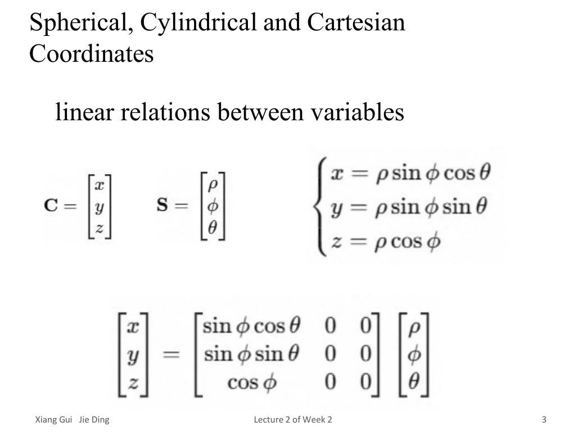
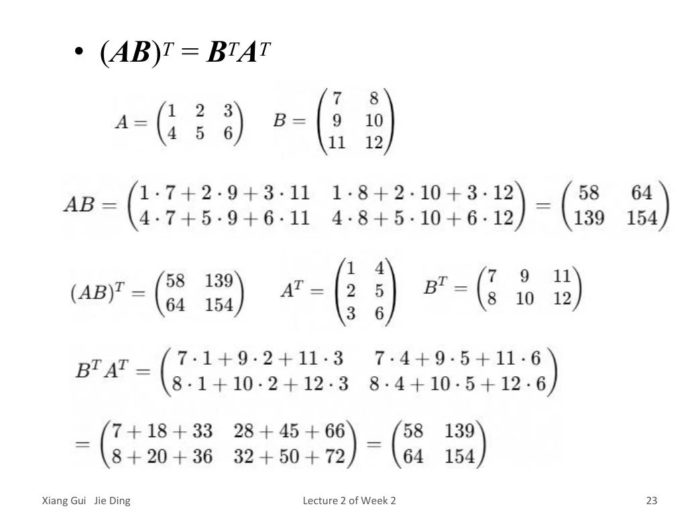
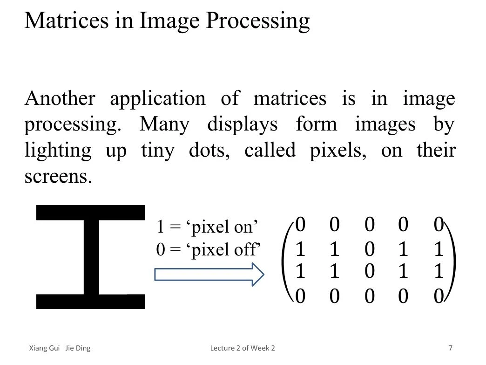
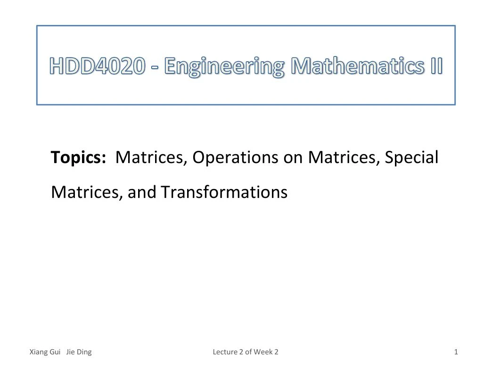

HDD4020 工程数学 II · 第 04 / 08 讲
第 2 章 · 矩阵、特殊矩阵与几何变换
Matrices, Special Matrices and Transformations
所属章节：第 2 章 空间坐标与矩阵
资料来源 · 1 项 / 已附 0 项
Topic 2/EMII_Week2_Lecture2.pdf未附原文件
未附文件仅列原始名称；版本与核对日期由维护者登记。
本节在整门课中的位置
上一节把空间中的点用三个数表示。本节把这种「用一排数描述一个对象」的思想系统化——矩阵就是一个按行、列排好的数表。它在工程里的地位类似于「容器」：线性方程组、几何变换、图像、网络结构，全都能装进矩阵，然后用统一的代数规则运算。
学完本节你应当能够：
- 说出 m×n 矩阵、元素 a_ij、行向量、列向量的含义
- 判断两个矩阵能否相加、能否相乘，并算出结果
- 写出方阵、对称阵、对角阵、单位阵的定义并举例
- 求矩阵的转置，并正确使用
(AB)ᵀ = BᵀAᵀ - 判断一个方阵是对称还是反对称，并说明反对称阵的对角元必为零
- 用矩阵乘法表示平面上的反射、旋转，并解释变换后的图形
与前后讲的衔接：本节只做「运算」，不问「能不能反解」。下一讲引入行列式与逆矩阵，回答的正是这个问题——什么样的矩阵有逆、怎样求逆，以及如何用逆矩阵解线性方程组。
4.1 矩阵的定义
一个 m×n 矩阵（matrix）A 是由 mn 个数排成 m 行、n 列的矩形阵列。第 i 行第 j 列的元素记作 a_ij，整个矩阵可写成
A = [a_ij]，i = 1, …, m，j = 1, …, n
其中 m 叫行数、n 叫列数，m×n 叫矩阵的型（size）。型相同的矩阵才谈得上「同型」。元素可以是实数、复数，也可以是后面会遇到的表达式。
课件的三个示例分别是 2×2、2×3、3×2 矩阵，用来说明「型」只是行列的数目，与元素内容无关。
A = [[2, 1], [7, 3]]（2×2），B = [[6, 1, 7], [5, 4, 8]]（2×3），C = [[10, 2], [3, 9], [1, 0]]（3×2）。
4.2 工程中的矩阵
课件列举了矩阵的典型用途：控制理论、电路原理、振动分析、结构分析，以及大量工程问题的联立方程。它给出的核心理由是：当方程数量很大时，用矩阵比逐项消元更容易。
这条理由值得展开。三个方程用消元法还算轻松，三十个方程就几乎无法手工处理；而写成 Ax = b 之后，所有的运算规则都可以程序化，计算机处理一万阶的方程组与处理三阶的方程组，算法是同一个。这就是「矩阵是工程计算的语言」的含义。
图像处理是另一个直观例子：显示器由一个个像素点组成，把「亮」记为 1、「灭」记为 0，一幅小图就是一个由 0 与 1 组成的矩阵。课件给出的 5×5 图案，例如
[[0,0,0,0,0], [0,0,1,1,0], [0,1,1,1,1], [0,1,1,0,0], [0,0,0,0,0]]
在屏幕上就显示为一个简单的图形。对图像做旋转、缩放、模糊，本质上都是对这个矩阵做运算。
4.3 行向量与列向量
只有一列的矩阵（n×1）叫列向量（column vector），只有一行的矩阵（1×n）叫行向量（row vector）：
列向量：[a₁; a₂; …; a_n]（竖排）；行向量：[a₁, a₂, …, a_n]（横排）。
这个区分在实际计算中非常要紧：矩阵乘法的定义要求「左矩阵的列数 = 右矩阵的行数」，而一个 1×n 的行向量乘一个 n×1 的列向量得到的是 1×1 矩阵（一个数），反过来乘则得到 n×n 矩阵。两者完全不同。
4.4 加法与减法
两个矩阵能相加（或相减）的条件是同型：行数相同、列数也相同。运算规则是对应位置的元素相加：
[[1, 3], [2, 4]] + [[5, 6], [8, 7]] = [[6, 9], [10, 11]]
这条规则与向量的加法完全一致（事实上矩阵加法就是逐元素加法的一般化）。型不同就没有「对应位置」，因此 2×3 与 3×2 的矩阵不能相加。
4.5 数乘
一个数 k 乘矩阵 A，等于 k 乘 A 的每一个元素：
10 · [[1, 2, 3], [8, 0, −5], [4, 6, 7]] = [[10, 20, 30], [80, 0, −50], [40, 60, 70]]
因此 (kA)_ij = k·a_ij。注意数乘与「矩阵乘法」是两件完全不同的事：数乘永远可行，矩阵乘法要满足维度条件。
4.6 矩阵乘法
这是本节最需要动手练的运算。定义：若 A 是 m×n 矩阵、B 是 n×p 矩阵（A 的列数等于 B 的行数），则乘积 AB 是 m×p 矩阵 C，其元素为
c_ij = Σ[k=1…n] a_ik · b_kj
用文字说：c_ij 是 A 的第 i 行与 B 的第 j 列的点积（两个长度都是 n 的向量逐项相乘再相加）。
课件的最小例子是 1×2 乘 2×3：
[1, 2] · [[3, 4, 5], [8, 7, 6]] = [1×3 + 2×8, 1×4 + 2×7, 1×5 + 2×6] = [19, 18, 17]
结果是 1×3。这条式子把「行乘列再求和」演示得非常清楚：左矩阵只有一行，右矩阵有三列，于是算出三个数。
维度检查的口诀：把两个型写成 (m×n)(n×p)，中间两个 n 必须相同（否则不能乘），剩下的 m×p 就是结果的型。这个检查在考试中可以省掉大量返工。
课件 Task 1 的两道题正好覆盖两种情形：
（1）[1, 0] · [[9], [6]]：型是 (1×2)(2×1) → 1×1，结果为 1×9 + 0×6 = 9。
（2）[[1, 6, 2], [3, 4, 7]] · [[3, 5], [1, 3], [2, 4]]：型是 (2×3)(3×2) → 2×2。逐项算：
c₁₁ = 1×3 + 6×1 + 2×2 = 13，c₁₂ = 1×5 + 6×3 + 2×4 = 31
c₂₁ = 3×3 + 4×1 + 7×2 = 27，c₂₂ = 3×5 + 4×3 + 7×4 = 55
故结果为 [[13, 31], [27, 55]]，与课件答案一致。
AB ≠ BA，甚至两者可能一个能算、另一个不能算。例如 2×3 与 3×2 相乘得 2×2，反过来得 3×3。做题时必须看清「谁在左、谁在右」。4.7 特殊矩阵
课件给出四类必须认识的特殊矩阵：
| 名称 | 定义 | 示例 / 要点 |
|---|---|---|
| 方阵 square matrix | 行数与列数相等（n×n） | [[2, 7], [1, 3]]（2×2）、三阶方阵 |
| 对称阵 symmetric matrix | 方阵且 a_ij = a_ji，等价于 Aᵀ = A | 以主对角线为轴「翻折」后不变 |
| 对角阵 diagonal matrix | 方阵且主对角线以外的元素全为 0 | [[3, 0, 0], [0, 5, 0], [0, 0, 4]] |
| 单位阵 identity matrix | 对角阵且对角元全为 1，记作 I | AI = IA = A，矩阵乘法中的「1」 |
单位阵的作用与数字 1 完全类似：任何同阶方阵乘它都不变。这条性质在下一讲求逆矩阵时会用到——逆矩阵的定义就是 AA⁻¹ = I。
4.8 转置及其性质
把 m×n 矩阵 A 的行与列互换，得到的 n×m 矩阵叫 A 的转置（transpose），记作 Aᵀ。换句话说 (Aᵀ)_ij = a_ji。
课件给出四条性质，每一条都值得记住：
- 型的变化：A 是 m×n，则
Aᵀ是 n×m。 - 两次转置还原：
(Aᵀ)ᵀ = A。 - 和的转置：
(A + B)ᵀ = Aᵀ + Bᵀ（顺序不变）。 - 积的转置：
(AB)ᵀ = BᵀAᵀ（顺序颠倒）。
第四条是最容易记错的。为什么顺序要颠倒？因为 AB 的 (i, j) 元是 A 的第 i 行乘 B 的第 j 列；转置之后这个元素跑到 (j, i)，而它恰好等于 Bᵀ 的第 j 行乘 Aᵀ 的第 i 列。把这条推导想通一次，就再也不会写错。
4.9 对称与反对称
对称（symmetric）：Aᵀ = A，即 a_ij = a_ji。例如 [[2, 1], [1, 3]]。
反对称（antisymmetric / skew-symmetric）：Aᵀ = −A，即 a_ij = −a_ji。例如 [[0, −1], [1, 0]]。
反对称阵有一个必然后果：主对角线上的元素全为 0。因为取 i = j 得 a_ii = −a_ii，故 a_ii = 0。课件正是用这一点来说明「反对称阵的对角元必须是零」。
这个结论在考试中常被用来快速判错：如果有人写了一个对角线非零的「反对称阵」，那一定是错的。
4.10 用矩阵表示几何变换
课件指出，计算机图形与游戏的基础就是变换：动画把曲面拆成一个个三角形，把顶点坐标存进矩阵，再对它们做旋转、平移、反射、放大，这些操作全都以矩阵的形式存储与执行。
平面上的三种基本变换：
| 变换 | 矩阵 / 形式 | 效果 |
|---|---|---|
| 关于 x 轴反射 | [[1, 0], [0, −1]] | (x, y) → (x, −y) |
| 关于 y 轴反射 | [[−1, 0], [0, 1]] | (x, y) → (−x, y) |
| 关于直线 y = x 反射 | [[0, 1], [1, 0]] | (x, y) → (y, x) |
| 逆时针旋转 90° | [[0, −1], [1, 0]] | (x, y) → (−y, x) |
| 旋转 180° | [[−1, 0], [0, −1]] | (x, y) → (−x, −y) |
| 平移（translate） | (x, y) → (x + a, y + b) | 不是 2×2 矩阵能表示的，需要加一个常数向量（或用 3×3 齐次矩阵） |
把图形的顶点按列排成矩阵，左乘变换矩阵，得到的就是变换后各顶点的坐标矩阵。课件用三角形与「房子」两个例子说明这一点。
三角形的矩阵表示。顶点 P(0, 0)、Q(3, 2)、R(3, 0) 排成
A = [[0, 3, 3], [0, 2, 0]]
第一列是 P，第二列是 Q，第三列是 R；第一行是各点的 x，第二行是各点的 y。点按列排是关键约定，排错了矩阵乘法就全错。
房子的矩阵表示。五个角点 P、Q、R、S、T 的坐标为 (1, 2)、(1, 4)、(1.5, 5)、(2, 4)、(2, 2)，排成
H = [[1, 1, 1.5, 2, 2], [2, 4, 5, 4, 2]]
左乘 A = [[0, 1], [1, 0]] 得
AH = [[2, 4, 5, 4, 2], [1, 1, 1.5, 2, 2]]
对照可见：每个点的 x、y 互换了，图形关于直线 y = x 翻转。课件说「关于 45° 线反射」，指的就是这条直线（它确实与 x 轴成 45°）。
4.11 例：验证三个变换
课件 Task：三角形顶点 P(1, 1)、Q(1, 3)、R(4, 1)。（1）写出矩阵 A；（2）用 B = [[1, 0], [0, −1]] 变换；（3）用 C = [[0, −1], [1, 0]] 变换。
（1）按列排点：A = [[1, 1, 4], [1, 3, 1]]。
（2）BA = [[1, 0], [0, −1]]·[[1, 1, 4], [1, 3, 1]] = [[1, 1, 4], [−1, −3, −1]]。y 坐标全部变号，图形关于 x 轴翻转——正是「关于水平轴反射」。
（3）CA = [[0, −1], [1, 0]]·[[1, 1, 4], [1, 3, 1]] = [[−1, −3, −1], [1, 1, 4]]。每个点 (x, y) 变成 (−y, x)，这是绕原点逆时针旋转 90°。
两个结果与课件答案一致。检验方法：取一个顶点手算，例如 P(1, 1) 在 C 下变成 (−1, 1)，与矩阵第一列吻合。
4.12 常见误解
- 把矩阵乘法当逐元素相乘：
[[1, 2], [3, 4]]·[[1, 0], [0, 1]]的结果是原矩阵本身（单位阵作用），不是[[1, 0], [0, 4]]那种逐元素积。 - 先乘后转置的顺序没颠倒：
(AB)ᵀ = BᵀAᵀ，写成AᵀBᵀ通常不等。 - 维度不检查就动笔：算之前先把型写成 (m×n)(n×p)，中间不相等就停下——那是不能乘，不是「算错了」。
- 顶点按行排：约定是「一点一列」，不是「一点一行」。排反了，变换矩阵要从左侧乘变成右侧乘，整个式子都得改。
- 以为平移也能写成 2×2 矩阵：
(x, y) → (x + a, y + b)含常数项，2×2 矩阵乘出来只有线性项，必须加向量或用齐次坐标。 - 把反对称阵的对角元写成非零：由
a_ii = −a_ii立刻得 0，这条可以直接用来检查答案。
原版图页（源 PDF 插图页）








| English | 中文 | 说明 / 例句 |
|---|---|---|
| matrix | 矩阵 | A rectangular array of mn numbers arranged in m rows and n columns. |
| element | 元素 | a_ij is the entry in the i-th row and the j-th column. |
| size of a matrix | 矩阵的型 | m×n, i.e. m rows and n columns. |
| row vector | 行向量 | A 1×n matrix. |
| column vector | 列向量 | An n×1 matrix. |
| scalar multiplication | 数乘 | Multiply every entry by the same number k. |
| matrix multiplication | 矩阵乘法 | c_ij = Σ a_ik b_kj; A must have as many columns as B has rows. |
| square matrix | 方阵 | A matrix with the same number of rows and columns. |
| symmetric matrix | 对称阵 | A square matrix with a_ij = a_ji, equivalently Aᵀ = A. |
| antisymmetric matrix | 反对称阵 | A square matrix with Aᵀ = −A; all diagonal entries must be zero. |
| diagonal matrix | 对角阵 | A square matrix whose entries off the main diagonal are all zero. |
| identity matrix | 单位阵 | A diagonal matrix with all diagonal entries 1; AI = IA = A. |
| transpose | 转置 | Swap rows and columns; (AB)ᵀ = BᵀAᵀ. |
| transformation | 变换 | A mapping such as reflection, rotation or translation, stored as a matrix. |
| reflection | 反射 | For the line y = x the matrix is [[0, 1], [1, 0]]. |
| pixel matrix | 像素矩阵 | An image stored as a matrix of 0 (off) and 1 (on) entries. |
A = [[1, 2, 3], [4, 5, 6]]，B = [[1, 0], [2, 1], [0, 3]]，求 AB 与 BA。AB。型为 (2×3)(3×2) → 2×2。
c₁₁ = 1×1 + 2×2 + 3×0 = 5，c₁₂ = 1×0 + 2×1 + 3×3 = 11
c₂₁ = 4×1 + 5×2 + 6×0 = 14，c₂₂ = 4×0 + 5×1 + 6×3 = 23
故 AB = [[5, 11], [14, 23]]。
BA。型为 (3×2)(2×3) → 3×3：
[[1, 2, 3], [6, 9, 12], [12, 15, 18]]（逐行算：第一行 [1×1+0×4, 1×2+0×5, 1×3+0×6] = [1, 2, 3]；第二行 [2×1+1×4, 2×2+1×5, 2×3+1×6]；第三行 [0×1+3×4, 0×2+3×5, 0×3+3×6]）。
结论。AB 是 2×2、BA 是 3×3，两者连型都不同，谈不上相等。这是「乘法不可交换」最直接的证据。
A = [[1, 2], [2, 5]]，求 Aᵀ，判断 A 是否对称，并计算 AAᵀ。Aᵀ = [[1, 2], [2, 5]]，与 A 相同，故 A 是对称阵。
AAᵀ = A² = [[1×1 + 2×2, 1×2 + 2×5], [2×1 + 5×2, 2×2 + 5×5]] = [[5, 12], [12, 29]]。
观察。结果仍是对称阵。这不是巧合：对任意矩阵，AAᵀ 与 AᵀA 都是对称阵，因为 (AAᵀ)ᵀ = (Aᵀ)ᵀAᵀ = AAᵀ。这条性质在统计学（协方差矩阵）与最小二乘法里反复出现。
写顶点矩阵。按列排：A = [[−1, 3, 1], [2, 2, 5]]。
写旋转矩阵。逆时针 90° 为 R = [[0, −1], [1, 0]]。
相乘。RA = [[0, −1], [1, 0]]·[[−1, 3, 1], [2, 2, 5]] = [[−2, −2, −5], [−1, 3, 1]]。
三个顶点变为 P′(−2, −1)、Q′(−2, 3)、R′(−5, 1)。
验算。用单点公式 (x, y) → (−y, x)：P(−1, 2) → (−2, −1) ✓；Q(3, 2) → (−2, 3) ✓；R(1, 5) → (−5, 1) ✓。
M = [[0, 2, −3], [−2, 0, 1], [3, −1, 0]] 是否反对称，并说明理由。看对角元。主对角线为 0、0、0，符合反对称的必要条件。
看对称位置。m₁₂ = 2 而 m₂₁ = −2，互为相反数；m₁₃ = −3 而 m₃₁ = 3；m₂₃ = 1 而 m₃₂ = −1，全部满足 a_ij = −a_ji。
结论。M 是反对称阵。若把某个对角元改成非零（如 m₁₁ = 1），它立刻就不再反对称——因为 a₁₁ = −a₁₁ 只能给出 0。
- 设
A = [[2, 3], [1, 4]]，B = [[5, 0], [2, 1]]，求2A − B。 - 设
A = [[1, 2], [3, 4]]，B = [[0, 1], [1, 0]]，求 AB 与 BA，并说明二者关系。 - 证明：若 A 是 m×n 矩阵，则
AAᵀ是对称阵。 - 把矩形顶点 (0, 0)、(2, 0)、(2, 1)、(0, 1) 关于直线 y = x 反射，求变换后的顶点。
- 写出平面内「关于 y 轴反射」的变换矩阵，并用它变换点 (3, −2)。
参考答案与思路
1. 2A = [[4, 6], [2, 8]]，减去 B 得 [[−1, 6], [0, 7]]。
2. AB = [[1×0 + 2×1, 1×1 + 2×0], [3×0 + 4×1, 3×1 + 4×0]] = [[2, 1], [4, 3]]；BA = [[0×1 + 1×3, 0×2 + 1×4], [1×1 + 0×3, 1×2 + 0×4]] = [[3, 4], [1, 2]]。两者不等，说明矩阵乘法一般不交换。
3. 由 (AAᵀ)ᵀ = (Aᵀ)ᵀAᵀ = AAᵀ，按对称阵的定义（转置等于自身）即得结论。注意这里用了 (XY)ᵀ = YᵀXᵀ 与 (Xᵀ)ᵀ = X 两条性质。
4. 顶点矩阵 [[0, 2, 2, 0], [0, 0, 1, 1]]，反射矩阵 [[0, 1], [1, 0]]，乘积为 [[0, 0, 1, 1], [0, 2, 2, 0]]，即 (0, 0)、(0, 2)、(1, 2)、(1, 0)——矩形被「竖了起来」。
5. 矩阵 [[−1, 0], [0, 1]]；(3, −2) → (−3, −2)。
AB 与 BA 通常不同，甚至一个能算一个不能算。动笔前先写 (m×n)(n×p) 检查中间是否相等。(AB)ᵀ = BᵀAᵀ，不是 AᵀBᵀ。可以用一个 2×3 与 3×2 的具体例子验算一次，加深印象。AI 或 IA 应等于 A 本身；算完 AAᵀ 结果必为对称阵。这两个自检不需要额外计算，只需看一眼结果的形状。方法与检查清单
矩阵乘法的手算流程
- 写出两个矩阵的型，检查左列数是否等于右行数
- 确定结果矩阵的型 m×p，先画好空格
- 逐格计算：取左矩阵第 i 行、右矩阵第 j 列，逐项相乘再相加
- 用「行首 × 列首」快速核对第一个元素
- 检查结果的型与每个格子的量级是否合理
几何变换题的检查项
- 顶点是否按列排（一点一列，第一行是 x、第二行是 y）
- 变换矩阵是否写在左侧
- 变换后的顶点是否与原顶点一一对应（顺序不能乱）
- 用单个顶点手算一次，验证矩阵乘法结果
- 是否说明了变换的几何含义（反射轴、旋转角与方向）
| 源文件 | 页码 / 位置 | 覆盖的知识点 |
|---|---|---|
| Topic 2/EMII_Week2_Lecture2.pdf | p2–p3 | 从坐标关系到「变量之间的线性关系」，过渡到矩阵 |
| Topic 2/EMII_Week2_Lecture2.pdf | p4–p8 | 矩阵示例、定义（m×n、a_ij）、工程应用、图像像素示例、2×2 / 2×3 / 3×2 例子 |
| Topic 2/EMII_Week2_Lecture2.pdf | p9 | 行向量与列向量 |
| Topic 2/EMII_Week2_Lecture2.pdf | p10–p11 | 矩阵加法、减法、数乘 |
| Topic 2/EMII_Week2_Lecture2.pdf | p12–p15 | 矩阵乘法的条件、1×2 乘 2×3 示例、一般公式 c_ij = Σa_ik b_kj、Task 1 |
| Topic 2/EMII_Week2_Lecture2.pdf | p16–p19 | 方阵、对称阵、对角阵、单位阵 |
| Topic 2/EMII_Week2_Lecture2.pdf | p20–p23 | 转置的定义与四条性质，含 (AB)ᵀ = BᵀAᵀ 的说明页 |
| Topic 2/EMII_Week2_Lecture2.pdf | p24 | 对称与反对称，反对称阵对角元为零 |
| Topic 2/EMII_Week2_Lecture2.pdf | p25–p32 | 变换的意义、反射 / 旋转 / 平移、三角形的矩阵、房子的矩阵与反射结果 |
| Topic 2/EMII_Week2_Lecture2.pdf | p33–p36 | Task：三角形在 B、C 两个矩阵下的像与几何解释 |
| （跳过）_info_*.html.txt | 全篇 | Moodle 快照，无讲义内容 |
| （拓展） | — | 4.6 的「维度检查口诀」、4.10 的变换矩阵对照表、4.12 的六条误解为方法性补充；平移需齐次坐标一句属背景说明，不新增考点 |